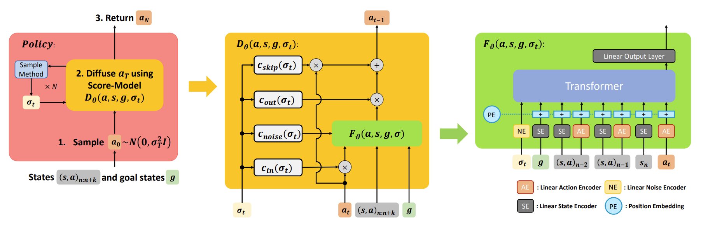

Goal Conditioned Imitation Learning using Score-based Diffusion Policies |
AbstractWe propose a new policy representation based on score-based diffusion models (SDMs). We apply our new policy representation in the domain of Goal-Conditioned Imitation Learning (GCIL) to learn general-purpose goal-specified policies from large uncurated datasets without rewards. Our new goal-conditioned policy architecture "BEbhavior generation with ScOre-based Diffusion Policies" (BESO) leverages a generative, score-based diffusion model as its policy. BESO decouples the learning of the score model from the inference sampling process, and, hence allows for fast sampling strategies to generate goal-specified behavior in just 3 denoising steps, compared to 30+ steps of other diffusion based policies. Furthermore, BESO is highly expressive and can effectively capture multi-modality present in the solution space of the play data. Unlike previous methods such as Latent Plans or C-Bet, BESO does not rely on complex hierarchical policies or additional clustering for effective goal-conditioned behavior learning. Finally, we show how BESO can even be used to learn a goal-independent policy from play-data using classifier-free guidance. To the best of our knowledge this is the first work that a) represents a behavior policy based on such a decoupled SDM b) learns an SDM based policy in the domain of GCIL and c) provides a way to simultaneously learn a goal-dependent and a goal-independent policy from play-data. We evaluate BESO through detailed simulation and show that it consistently outperforms several state-of-the-art goal-conditioned imitation learning methods on challenging benchmarks. We additionally provide extensive ablation studies and experiments to demonstrate the effectiveness of our method for effective goal-conditioned behavior generation. |
|  |
MethodThis is an example of a new section of text with a heading. You can replace this with your own content. |
ExperimentsThis is an example of a new section of text with a heading. You can replace this with your own content. |
|
To cite this paper:
|